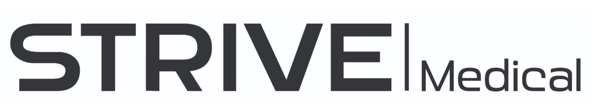

SynDex is a surgical training simulator designed to replicate real surgical robotics and minimally invasive procedures. Our team identified a major gap in medical education: students and future surgeons lack realistic, hands-on opportunities to practice robotic surgical techniques in a safe, controlled environment.
After a year of development, we created the first version of SynDex — a system that provides realistic manipulator feel, interactive training tasks, and a foundation for future haptic-enabled surgical simulation. SynDexV2 is now underway, with major improvements planned in haptic feedback, dual-arm control, and simulation realism.
I contributed to SynDex as part of the firmware team, working extensively with ODrive motor controllers and encoder feedback. I led much of the research and development for admittance control, enabling the system to respond naturally to user input.
For SynDexV2, I am leading both the firmware and software teams. My focus includes improving haptic feedback, refining control algorithms, and enhancing the training software experience. I also help lead the overall team — a new and exciting opportunity for me to grow as a technical and organizational leader.